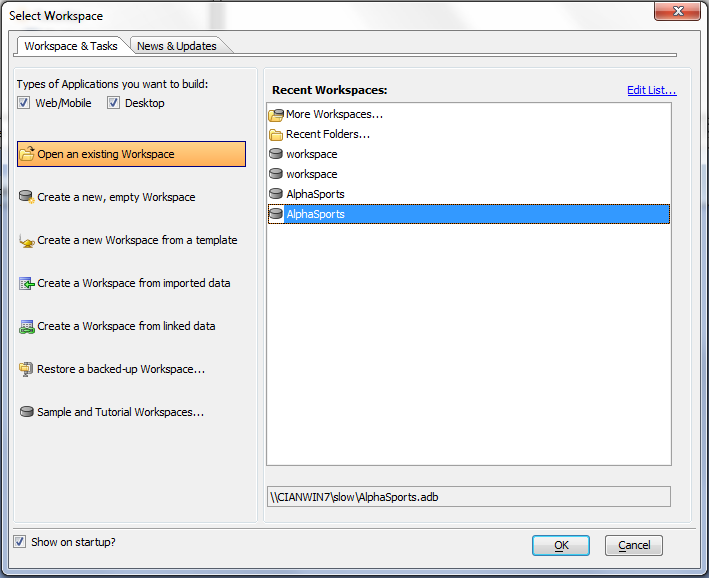
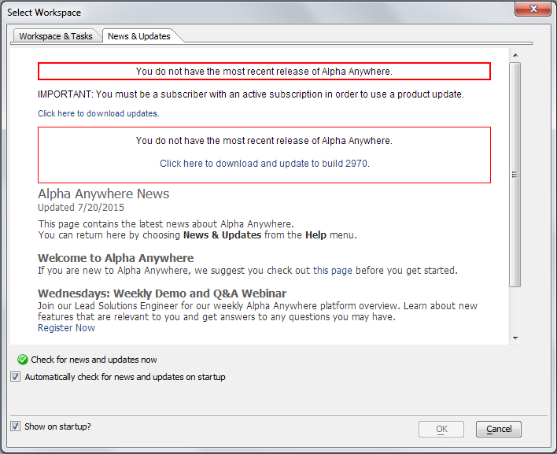

Select Workspace Dialog
The Select Workspace dialog appears when you start Alpha Anywhere. Here you can select what you want to do, and quickly get started. The Workspace &Tasks tab allows you to open or create a new workspace.

When you have no workspace open, you can display this dialog by clicking Recent Workspaces on the toolbar.
The entries at the top are typical menu commands for creating a new workspace and opening existing workspaces.
The Recent Workspaces list shows an editable scrolling list of the last 30 workspaces opened in Alpha Anywhere. as you work with Alpha Anywhere, your recently used workspaces will appear in this dialog. Double-clicking any entry under Recent Workspaces opens the selected workspace.
Clicking More Workspaces... displays the Open Workspace dialog, where you can search your computer for an existing workspace.
Clicking New Workspace... displays the Create New Workspace dialog, where you can specify a folder, a workspace name, then create a new workspace.
Clicking New Workspace Using the Genie... displays the New Workspace Genie dialog, where you can select a workspace template, specify a folder, then create a new workspace.
Clicking Restore a backed-up Workspace... displays the Restore Workspace dialog, where you can select a workspace backup and restore it to its original folder.
This picture shows the News & Updates tab. If you have an Internet connection, the News tab will notify you of new patch releases. You can download patches and help files from this screen.

The News Tab
You can hide the Alpha Anywhere dialog by clearing the Show at startup? check box.
See Also